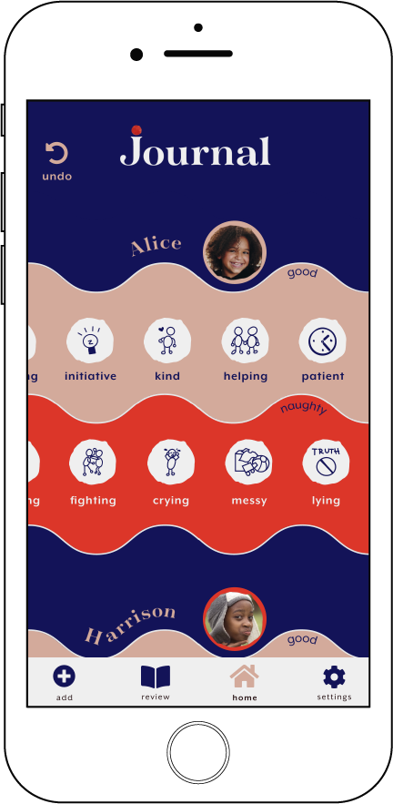

journal
Journal is a native application built for nannies and parents. This app allows a nanny to journal kids' behavior and keeps parents in the know.
ROLE
Research, UX Design, Prototyping, Testing
ROLE
- Research
- Design
- Prototyping
- Testing
DELIVERABLES
User Personas, User Stories, User Flows, Content Strategy, Sketches, Wireframes, Usability Testing
TOOLS
- Paper & pen
- Adobe CC
- Colorable
- Figma
overview
Nannies are always keeping track of their kids' behavior. They write it on paper or try to remember, and then they forget or lose their notes. This application is replacing multiple tools and helps keep consistency when parents want to know if their kids' were good or naughty.
research
KEY SURVEY RESULTS
The online survey helped to determine how nannies keep track of children's behavior and how they share it with parents. 70% of respondents use memory and 40% make notes on paper. 70% of them share the information with parents after shift and about 70% sometimes forget.


NANNY INTERVIEW
The parents require me to help them with improving the kids' behavior. I mark the kids' behavior in a notebook or make a sheet. It is challenging to be consistent. I often forget the notes when we leave the house for activities.
I have asked experienced nannies on Reddit how they report the behavior to parents. Nannies on Reddit practice journaling, maintain a chart or keep things in a google doc. They keep track of the kids' behavior and the parents can access it any time.
11 out of 12 nannies recommend journaling. The journal is often kept at one spot and accessible to the parents. The nanny does not push the parents to review the journal..
competitive analysis
After performing a basic SWOT analysis I have identified opportunities on the market. The key opportunity is to build consistency in tracking kids' behavior and help parents to stay in the know.


I have observed that the UI of competitors looks more like it is targeting kids than adults. I was unable to find an app that would behave like a journal. During my research, I realized that a 'report' is not a desirable way how to go about sharing the kid’s behavior which appears to be the case for most of the comeptition.
Some of the apps require unnecessary information regarding children.
user persona
Ursula
nanny
Ursula came to the USA for one year to work as a nanny. She is responsible for two kids, 5 and 8 y.o. She spends about six hours a day with them. She helps them with their homework, takes them to their activities, and teaches them a foreign language. The parents want the kids to be excellent in school and also well behaved.
Jessica
mom & lawyer

Jessica is an ambitious career woman who wants to provide the best care for her kids. She wants a nanny who will be a friend and authority to her kids at the same time. Her kids have a lot of activities and are learning a second language. She wants them to have good behavior as well, which is challenging since she is not able to spend as much time with the kids as she would like. She relies on her nanny to be able to navigate the kids toward building good habits and behaviors.
information architecture
I reviewed all aspects of my research and built high priority user stories and user flows.
user flows
→ As a user, I want to add a kid.

→ As a user, I want to mark kids' behavior.
all flows →prototype
sketches
wireframe
Before building any time consuming hi-fidelity mockups I test my wireframes and make necessary adjustments
wireframe →visual design
My research demonstrated that current apps offered on the market look childish. I wanted to differentiate the design from the competition and give it a modern minimalistic design with a touch of playfulness inspired by children.
COLOR & SHAPE
Bright colors waves, and organic shapes were inspired by kid’s art and represent joyfulness.
TYPOGRAPHY
Tenez intended to be playful with hyper distinguishing rhythmic anatomy. The complementary utility typeface is Mr. Eaves XL. Its design has superior readability and offers a large number of weights.
hi-fidelity
Hi-fidelity mock-ups were composed to bring together the research, strategy and visual design. The key concepts were fully fleshed out to create a delightful experience for the user.
testing
I have performed multiple rounds of testing and gradually adjusted the design. I have identified the 3 key discoveries and modifications.
UI challenge
The first UI was not intuitive and was confusing. The second UI works with higher contrast and clear sections.
Modal Screen
The three screens demonstrate how the “add” pop-up developed after several rounds of testing. The final modal screen keeps the user away from distractions in the app’s main window.
Navigation
Along with the update screen, the navigation menu has changed as well. The name of the journal section has been changed to “review” after the first testing.
Check box
After the first testing, the “not selected” option was changed to a gray color. See detail in the pattern library
conclusion
The principal concept in this project is to motivate kids to behave better. By journaling and keeping all the information accessible at one place allows parents to look up if kids are good or otherwise. Journaling is a soft way how to inform parents about kids' behavior, keep it consistent and at one place.
self-reflection
I assumed that parents want to get reports. I learned from the interview with a nanny, that kids are competitive and want to gain good points and eventually get a reward. After having a conversation with nannies and parents on Reddit I discovered that journaling is preferable. The research helped me to rethink my intention.
Color and its symbolic meaning are closely tied to navigation. It was great to see how the human eye reacted to colors. The testing exposed numerous flaws. Improper color choice can easily mislead the user.